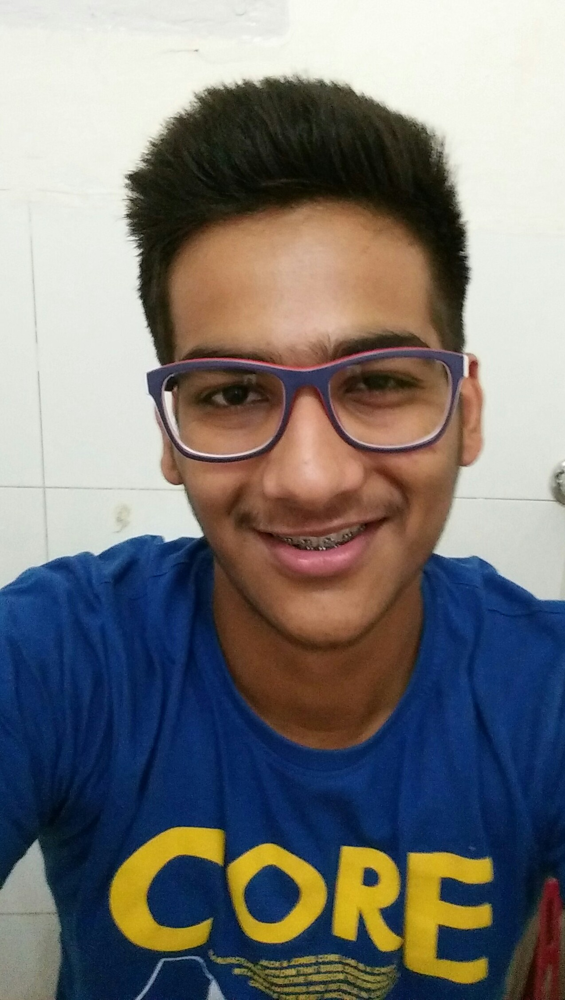

|
|

My name is Noveen Sachdeva, and I'm currently pursuing my B.Tech in CSE from IIIT Hyderabad.
I am 17 years old and am from Chandigarh. I did my secondary education from Delhi Public School, Chandigarh.
My favourite type of food is North Indian and I also like Chinese food.
On the academic part, my 12th results are as follows:
CBSE Percentage: 95.4%
JEE Mains:
Marks: 237
All India Rank: 2348
JEE Advanced:
Marks: 242
All India Rank: 2311
BITSAT Marks: 351
My favorite actress is Katrina Kaif and my favourite actor is Hrihik Roshan.
I have'nt accomplished much on the sports side except the fact that I have played districts level cricket in class 10th.
I also like to play sports such as football, volleyball and squash.
I love my college here @IIIT-H, and am totally saisfied with my college life.
I am studying top of the line courses like C-Programming, DLP, ITWS etc. in my first year of college itself.
Thanks, for stopping by!
Love,
Noveen Sachdeva.
|